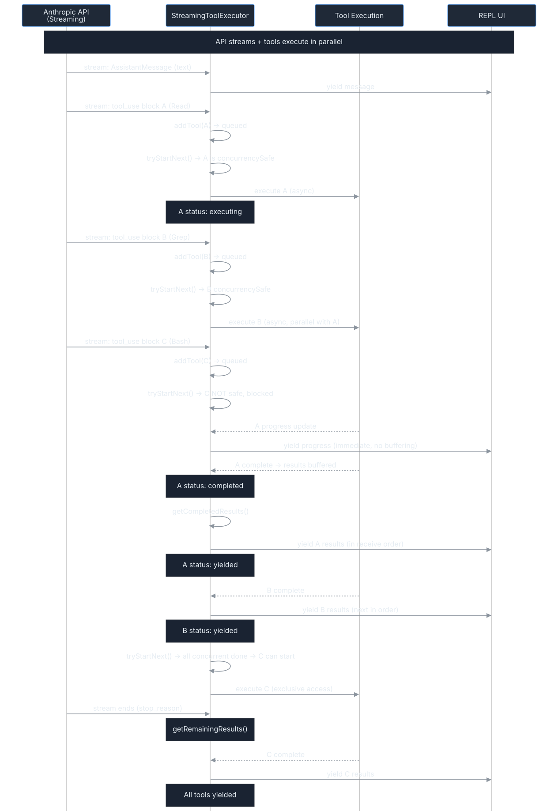
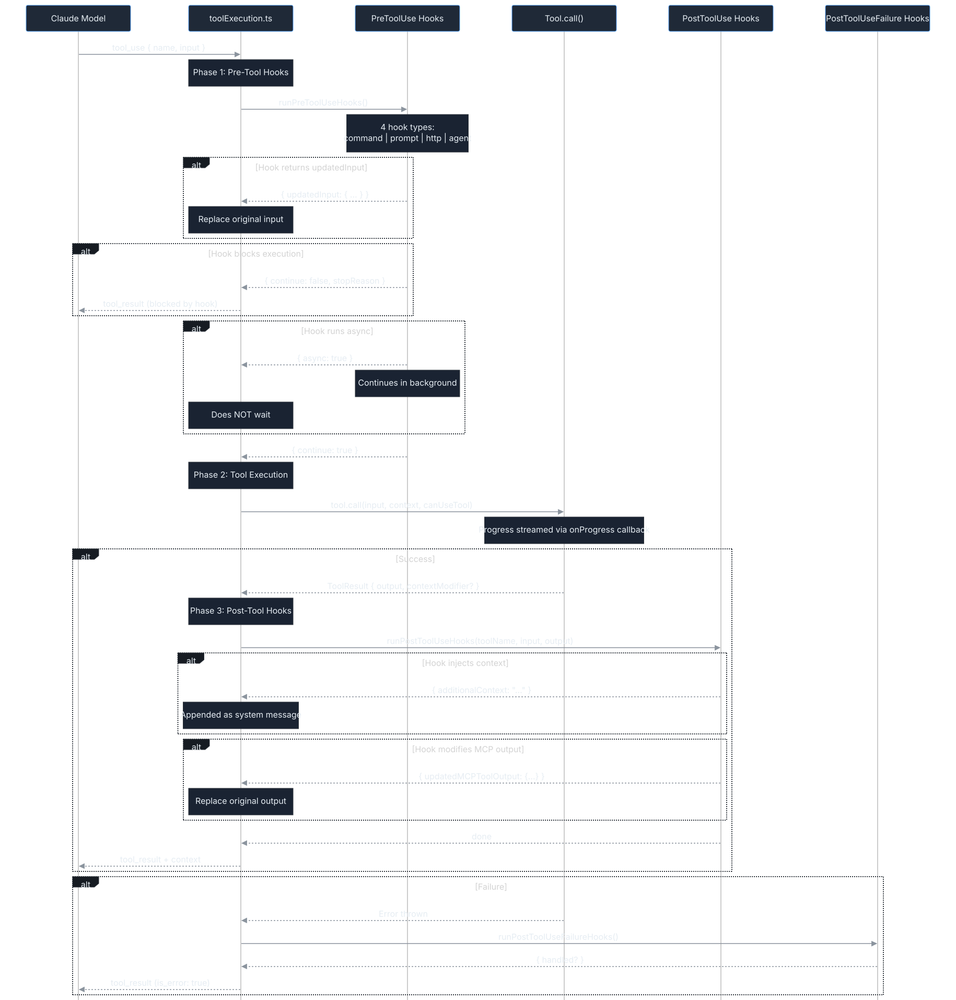

8 high-resolution SVG diagrams from source code analysis (1,966 files)
Entry → UI → Query Engine → Services → Tools → Extensions. Full streaming with AsyncGenerator throughout.

Parallel startup optimization: MDM + Keychain prefetch + GrowthBook init. Compile-time feature flags for dead code elimination.

The heart of the system: budget check → compaction → streaming API → tool execution → recovery/continue. All via AsyncGenerator.

partitionToolCalls() groups by isConcurrencySafe. Concurrent-safe tools run in parallel (max 10), others run serially.

Tools execute as API streams them. Results buffered and emitted in receive order. Progress messages stream immediately.

7-layer permission: validate → tool check → rules → hooks → mode → classifier → user dialog. Each layer can short-circuit.

11 events × 4 hook types. Hooks can modify input/output, inject context, block execution, or run async in background.

Light to heavy: Snip → MicroCompact → Context Collapse → AutoCompact. Plus Reactive Compact for emergency 413 recovery.
